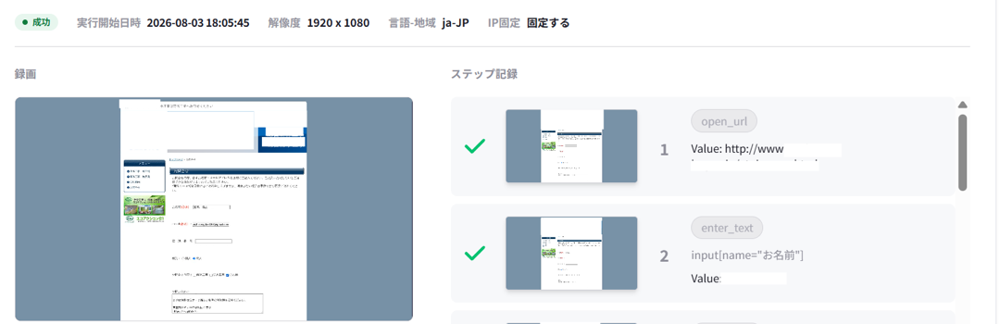

1通5円。
送った全件を、
動画で残します。
AIが企業ごとのお問い合わせフォームを読み、提案文を入力して送信します。課金は送信に成功した分だけ。送れなかった分は0円です。
反応率はお約束できません。
そのかわり、送った事実は全件お見せします。
見積の前に、御社に向くかどうかからお話しします。

WHY VIDEO
フォーム営業で
いちばん見えにくいのは、
「本当に送られたか」です。
月末に届く報告が「今月の送信数」の1行だけ、ということは珍しくありません。それでは、どの会社に、どんな文面が、最後まで届いたのかは、報告書からは分かりません。反応が少ないとき、原因が文面なのか、送り先なのか、そもそも送れていないのか。そこが切り分けられないまま、次の月の費用を払うことになります。
HOW IT WORKS
AIが1社ずつサイトを読み、
提案文を書いて、
フォームへ送ります。
送り先を決めるのは御社です。AIが担うのは、読む・書く・入力する・送る・録る、の手作業の部分です。
- STEP 1送り先を選ぶ業種・地域・規模で絞る
- STEP 2AIが文面を書く相手のサイトを読んで一文を足す
- STEP 3AIが入力・送信フォームを解析して送る
- STEP 4全件を録画管理画面で1社ずつ確認
業種・地域・規模で選ぶ
業種、地域、従業員規模で対象を絞り込みます。送信リストには、1回の選択で最大100社ずつ加えられる仕組みです。
その会社への一文を添える
AIが相手企業のサイトを読み、御社共通の訴求に、その会社あての一文を加えて提案文をつくります。全社に同じ文を撒く一斉送信とは、ここが違う点です。
PCを閉じても動く
送信はクラウド上で動きます。担当者のパソコンを開いておく必要はありません。上限は月30,000通です。
EVIDENCE
送った1通ごとに、
入力から送信完了までを
録画します。
記録に残すのは件数ではなく、1通ごとの操作を写した動画と手順です。「動いているのか分からない」を、管理画面を開けば確かめられる状態にします。

- 01
録画で残す
ページを開くところから、各欄への入力、送信完了の画面まで。1通ごとに動画で記録します。
- 02
手順ごとに、成否が分かる
「URLを開く」「名前を入力」「メールを入力」と、手順ごとに成功のチェックが付きます。途中で止まったときも、どの手順かが一目で分かる作りです。
- 03
60日間、1社ずつ開ける
録画の保存期間は60日です。反応があった会社、気になる会社を、あとから1社ずつ開いて確認できます。
PRICE
1通5円は、
他社と横並びです。
違いは「記録」の欄にあります。
料金は成功した送信1通につき5円です。フォームが見つからない、入力できない、送信が完了しない、といった場合があります。こうした送れなかった分には課金しません。どこで止まったかは録画で分かるので、請求の根拠もそのまま確かめられます。
送信に失敗した分は 0円
- 初期費用0円
- 録画全件・60日保存
- 月の送信上限30,000通
最低利用数・期間、消費税の扱い、支払時期は、ご相談時に書面でご案内します。条件が食い違うときの優先は、契約書の記載です。
他社の公開価格と並べると
2026年9月2日時点の各社公式サイトの公開情報。社名は伏せています。
| サービス | 初期費用 | 公開価格 | 記録 |
|---|---|---|---|
| つばめリード | 0円 | 5円／成功送信 | 全件の録画 |
| A社 | 0円 | 5〜15円／件 | 成功・失敗リスト（プランによる） |
| B社 | 0円 | 4.9〜11.2円／件 | 送信前後のスクリーンショット |
| C社 | 0円 | 月1万件5.5万円の掲載例 | 基本の配信レポート |
単価だけなら、5円は他社と大きくは変わりません。なおC社は月額で送信枠を買う形のため、成功1件ごとの課金とは仕組みが異なります。違うのは「記録」の欄です。各社で税込・税別、最低利用数、対象フォーム、月額条件が異なり、公開情報は変わることがあります。
HONESTLY
ただし、5円で約束できるのは
送信までです。
反応率はお約束しません。
つばめリードの反応率について、まだ公表できる自社の実績値はありません。フォーム営業そのものも送る会社が増え、反応は年々下がる傾向にあります。下の試算は、他社が公開している反応率0.1〜0.2%を仮に置いたものです。
税・最低利用数は含まない単純計算です。反応は返信などの数で、商談・受注の数ではありません。反応は商材、送り先、文面、時期で大きく変わり、この件数を保証するものではありません。
約束できないこと
返信の数、商談の数、受注。これは商材と送り先と文面で決まり、私たちが決められるものではありません。
一緒にできること
録画と反応を見比べて、文面と送り先を見直す材料をお渡しすること。少ない通数で良し悪しを決めないことです。
RESPONSIBLE OUTREACH
営業お断りのフォームと、
停止を頼まれた先には
送りません。
送れることと、送ってよいことは別です。受け取る側に嫌われる送り方は、御社の名前を傷つけます。
断られた先を外す
営業目的の連絡を断っているフォームや、停止のご依頼があった送り先は、対象外です。
送り主を名乗る
会社名、担当者、連絡先、連絡の目的を隠さずに書きます。受け取った側が、読んで判断できる文面が前提です。
CAPTCHAは突破しない
画像認証などの制限を回避する前提では動かしません。送れないものは失敗として扱い、課金もしません。
FIT CHECK
向いている会社と、
向いていない会社があります。
安いから、で始めても、商材と体制が合わなければ費用が残るだけです。先に両方を並べます。
向いている会社
- 全国の法人へ提案できるBtoB商材がある
- 1件の商談・受注の価値が高い
- 営業の人手が足りず、声をかける母数を増やしたい
- 返信が来たら、すぐ商談に対応できる
向いていない会社
- 商圏が狭く、送り先になる会社が少ない
- 単価が低く、受注1件で残る利益が小さい
- 数百通だけ送って、短期間で良し悪しを決めたい
- 相手に渡せる具体的な価値が、まだ言葉になっていない
- 受託開発や士業のように、知らない会社からは発注しない業界
右側に当てはまる場合は、ご相談の場で「いまは始めないほうがいい」とお伝えすることがあります。
TSUBAME SERIES
狙った1社の決裁者に
会いたいなら、
つばめリードは向きません。
つばめリードが得意なのは、多くの会社に広く声をかける「面」の営業です。特定の決裁者と会いたい「点」の営業は、紹介でつなぐ「つばめリファラル」が担います。
BEFORE ESTIMATE
見積の前に、
4つの条件を一緒に確かめます。
公開している単価だけで決めず、運用の条件までそろえてから始めてください。ご相談では、次の4つを先にお伝えします。
最低利用数と期間
何通から、どのくらいの期間でお受けするか。
消費税と支払時期
5円が税込か税別か、いつお支払いいただくか。
送れないフォーム
送信の対象外になるフォームの種類。御社の業界で多いものがあるか。
成功の判定と、録画の見方
何をもって「成功送信」とするか。管理画面で録画をどう確かめるか。
まず1つの商材で、送れる会社がどれくらいあるかを一緒に数えるところから始めます。
お話しした結果、いまは送らないほうがいい、という結論になるかもしれません。
相談日時を予約する予約ページ（TimeRex）が別のタブで開きます。